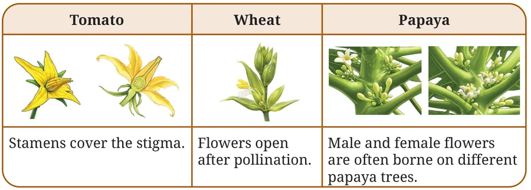
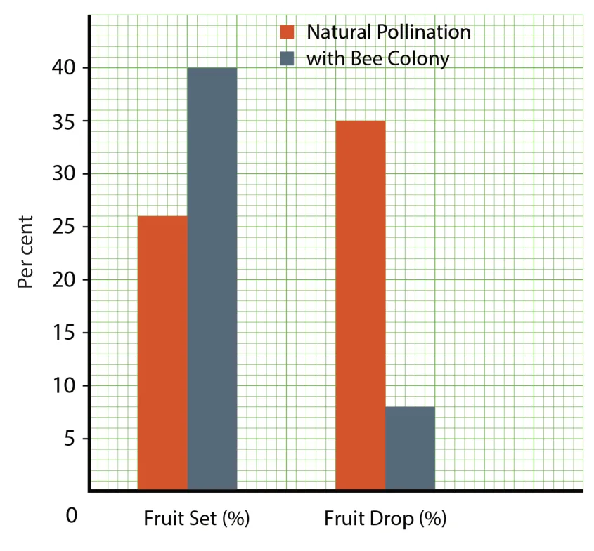

In a china-rose (hibiscus) plant, a pollen tube grows through the style after pollen lands on the stigma. Which process is about to happen next?
Step 1
Pollination has happened and the pollen has germinated
Step 2
The pollen tube carries the male gamete down to the ovule
Step 3
The male gamete will fuse with the egg cell to form a zygote
AnswerFertilisation
2
Look at the calotropis (madar) and dandelion seeds (Fig. 11.16). What kind of seed dispersal are they adapted for?
Step 1
Madar seeds have tufts of silky hairs; dandelion seeds have tiny parachutes of hairs
Step 2
These make the seeds light so they float far on air currents
AnswerDispersal by wind
3
A farmer plants two maize varieties side by side. Seeds form only when pollen from one variety reaches the stigma of the other. What type of pollination is this?
Step 1
Pollen moves from a flower of one plant to the stigma of a flower on another plant of the same species
AnswerCross-pollination (by wind in maize)
4
Why do animals with external fertilisation generally produce more eggs than animals with internal fertilisation?
Step 1
Eggs laid in water are unprotected
Step 2
Many never meet sperm; many are washed away by currents or eaten
Step 3
Laying thousands of eggs makes sure at least a few are fertilised and survive
Step 4
In internal fertilisation, sperm meets egg inside the body and the embryo is protected, so fewer eggs are enough
AnswerTo make up for the huge loss of unprotected eggs
5
In animals, in which method of fertilisation are the gametes more protected?
Step 1
Gametes meet inside the female body, safe from drying, currents and predators
AnswerInternal fertilisation
6
Ravi notices that he is growing taller rapidly, his shoulders are broadening and his voice cracks. Which stage of life is he entering?
Step 1
These changes are caused by the male hormone (testosterone) made by the testes
AnswerPuberty (the start of adolescence)
7
Rina’s period comes every 28 days. Her last period started on 5th March. When is her next period most likely?
GivenCycle = 28 days, last period = 5 March
Step 1
Next period = 5 March + 28 days
Step 2
5 + 28 = 33; March has 31 days, so 33 − 31 = 2
Answer2nd April
8
A human zygote has just formed. How many chromosomes does it have?
Step 1
Sperm (23 chromosomes) + egg (23 chromosomes)
Answer46 chromosomes (23 pairs)
9
What protective devices can be used during sexual activity to reduce the spread of sexually transmitted infections (STIs)?
Step 1
Barrier methods stop direct contact with body fluids
AnswerCondoms; they also prevent pregnancy
10
If a couple uses oral contraceptive pills but not condoms, which risks remain and why?
Step 1
Pills only change hormones so that eggs are not released
Step 2
They do not block contact between partners, so infections can still pass
AnswerThe risk of sexually transmitted infections remains (and pills can fail if a dose is missed)
11
Young ones of many animals can walk or find food soon after birth, but human babies depend on parents for a long time. What are the advantages and disadvantages of this for humans as a species?
Step 1
Advantage: the brain keeps developing after birth, giving a long time to learn language, skills and culture; strong family bonds
Step 2
Disadvantage: babies are helpless and vulnerable for years; parents spend a lot of time and resources; humans have few children
AnswerBetter learning and care, but long dependence and slow population growth
Think it over: wind vs insect pollination
2 questions
Data from the textbook table: wind-pollinated flowers make 5,00,000 to 10,00,000 pollen grains and 50 to 200 seeds; insect-pollinated flowers make 20,000 to 40,000 pollen grains and 800 to 1,000 seeds.
1
Compare the two strategies in terms of the pollen-to-seed ratio and the efficiency of pollination and seed formation.
Key ideaPollen-to-seed ratio = pollen grainsseeds formed (smaller = more efficient)
Step 1
Wind: 500000200 = 2,500 up to 100000050 = 20,000 pollen grains per seed
Step 2
Insect: 200001000 = 20 up to 40000800 = 50 pollen grains per seed
Step 3
Insect pollination makes far less pollen but far more seeds
AnswerInsect pollination is about 100 to 1,000 times more efficient; most wind-blown pollen is wasted
2
Why can producing a very large number of pollen grains still be an effective strategy?
Step 1
Wind is free; wind pollen is tiny and cheap to make, so lakhs of grains can be produced
Step 2
Grasses like wheat and maize grow close together, so with so much pollen in the air enough lands on their long feathery stigmas
Step 3
The plant saves energy by not making big petals, scent or nectar
AnswerHuge numbers make up for the randomness of wind
Revise, Reflect, Refine
13 questions
1
A flower’s anthers are removed before it matures. Later, pollen from another plant of the same species is dusted onto its stigma and seeds are produced. Which process has been ensured? (i) Self-pollination (ii) Cross-pollination (iii) Fertilisation (iv) Tissue culture
Step 1
Removing anthers stops the flower’s own pollen (no self-pollination)
Step 2
Pollen came from another plant of the same species
Answer(ii) Cross-pollination (as in artificial hybridisation)
2
Arrange in the correct order: (i) pollen germination on stigma (ii) fertilisation (iii) pollination (iv) formation of zygote
Step 1
Pollen first reaches the stigma (pollination)
Step 2
It germinates and grows a pollen tube
Step 3
The male gamete fuses with the egg (fertilisation), forming a zygote
Answer(iii) → (i) → (ii) → (iv)
3
Assertion (A): The zygote formed after fertilisation immediately attaches to the uterus wall. Reason (R): The uterus wall is always prepared to receive the zygote.
Step 1
A is false: the zygote forms in the oviduct and divides while moving to the uterus; only then does it implant
Step 2
R: the uterine lining thickens and becomes blood-rich in every cycle to receive an embryo (it is shed if no embryo comes)
AnswerExpected answer (iv) A is false, but R is true (write that the wall prepares itself every cycle)
4
Why does asexual reproduction produce offspring that are genetically identical to the parent?
Step 1
Only one parent is involved and there is no fusion of gametes
Step 2
New cells are made by mitosis, which copies the chromosomes exactly
AnswerThe offspring are clones with the same genetic material
5
Explain why the menstrual cycle stops during pregnancy.
Step 1
Menstruation is the shedding of the uterine lining when no embryo has implanted
Step 2
In pregnancy, the embryo is implanted in this lining and depends on it, so it must be kept
Step 3
Pregnancy hormones also stop new eggs from maturing and being released
AnswerThe lining is needed for the baby, so ovulation and menstruation stop until after childbirth
6
Why are flowers that bloom at night white or light in colour compared with day-blooming flowers?
Step 1
Night flowers are pollinated by night animals such as moths and bats
Step 2
Bright colours cannot be seen in the dark; white petals reflect the little moonlight
Step 3
They are usually strongly scented too (raat ki rani, jasmine)
AnswerWhite is easiest to see at night; day flowers use bright colours for bees and butterflies
7
Why are vegetatively propagated plants more vulnerable to diseases than sexually reproduced plants?
Step 1
All vegetatively propagated plants are genetically identical clones
Step 2
A disease that attacks one can attack all; none has a variation for resistance
Step 3
Diseases of the parent (especially viruses) pass directly to the new plants
AnswerNo variation, so a whole crop can be wiped out
8
If all flowers of a plant type could only self-pollinate, how would genetic diversity change over several generations?
Step 1
Genetic material would only be reshuffled within the same plant
Step 2
No new characters would come from other plants, so the plants would become more and more alike
Step 3
Such a population adapts poorly to new diseases, pests or climate
AnswerGenetic diversity would decrease
9
A farmer wants a large number of genetically identical plants quickly. Suggest suitable methods and explain why they work.
Step 1
Tissue culture: thousands of disease-free plantlets from a few cells (banana)
Step 2
Cutting, grafting and layering (sugarcane, rose, mango, lemon)
Step 3
These are asexual methods based on mitosis, so every plant is an exact copy of the chosen parent
Step 4
They skip flowering and seed formation, so plants are ready sooner
AnswerTissue culture and vegetative propagation
10
Suresh prepares slides of pollen grains in sugar solutions of 0%, 2.5%, 5%, 7.5% and 10% to study pollen germination. (i) What hypotheses can be tested? (ii) What should be kept the same?
(i) Hypotheses
Step 1
Pollen needs sugar to germinate (compare 0% with the others)
Step 2
Germination increases with sugar concentration up to a point; too much sugar reduces it
Step 3
There is an optimum concentration where most pollen germinates and tubes grow longest
(ii) Constants
Step 1
Same species and flower age, same amount of pollen, same volume of solution, temperature, light, time of observation and counting method
AnswerOnly the sugar concentration should change
11
Which type(s) of pollination might occur in tomato (stamens cover the stigma), wheat (flowers open after pollination) and papaya (male and female flowers on different trees)?

Pictures from Question 11
Step 1
Tomato: stamens form a cone around the stigma, so its own pollen falls on it
Step 2
Wheat: pollination happens before the flower opens, so outside pollen cannot enter
Step 3
Papaya: pollen must travel from a male tree to a female tree
Apple orchards: at Place A natural pollinators pollinated the flowers; at Place B beekeeping was used (Fig. 11.24). (i) What hypotheses were tested? (ii) What are the parameters? (iii) Compare A and B. (iv) What do you infer?

Fig. 11.24
Step 1
(i) Bee colonies increase pollination and fruit set; better pollination reduces fruit drop; falling yield is due to fewer natural pollinators
Step 2
(ii) Changed: type of pollination. Measured: fruit set % and fruit drop %. Kept same: variety, tree age, climate, soil, water, fertiliser, season
Step 3
(iii) Fruit set: A 26%, B 40%. Fruit drop: A 35%, B 8%. B has about 1.5 times the fruit set and less than a quarter of the drop
Step 4
(iv) Bees improve pollination, so more fruits form and stay on the tree
AnswerBeekeeping with apple farming increases yield and also gives honey
13
A student claims, “In humans, ovulation always happens on day 14 of the menstrual cycle.” Is this correct? Give at least two reasons.
Step 1
Cycle length differs from person to person (21 to 35 days); day 14 fits only a 28-day cycle
Step 2
Ovulation is about 14 days before the next period: near day 7 in a 21-day cycle, near day 21 in a 35-day cycle
Step 3
It can shift month to month due to stress, illness, diet or hormones, and is irregular after puberty
AnswerThe claim is not correct
The Quest Continues
2 questions
1
Who determines the sex of a baby?
Step 1
The mother’s egg always carries an X chromosome
Step 2
A sperm carries either X or Y: X + X = girl, X + Y = boy
AnswerThe father’s sperm decides
2
Does a unicellular organism like amoeba or yeast ever “grow old”?
Step 1
When an amoeba divides, the parent leaves no dead body; it becomes two young cells
Step 2
But in yeast (budding) the mother cell keeps a scar for each bud, collects damage and can make only a limited number of buds
AnswerAgeing exists, but it is very different from ageing in humans
Made by MT Classes, S.K. Nagar, Motihari for Class 9 CBSE students. Questions are from the NCERT Exploration textbook; solutions are written by MT Classes. Back to the chapter notes · All notes